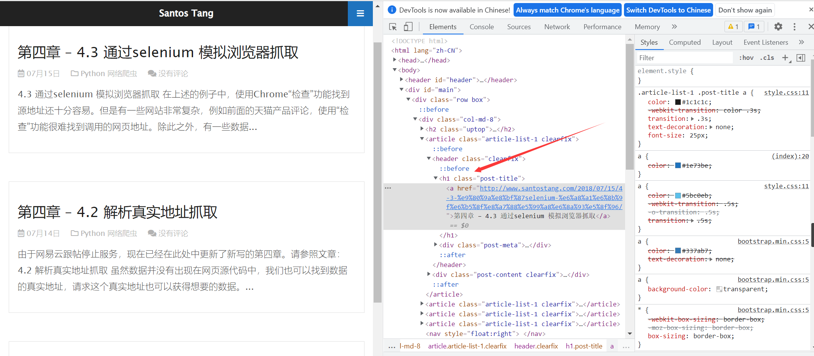
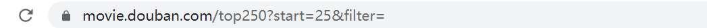
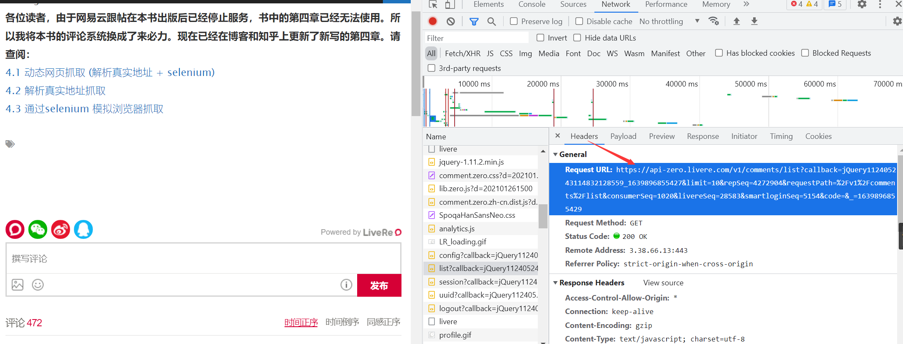

参考：《PYTHON网络爬虫从入门到实践》
bs4库的使用
- 功能
用来解析爬到的html标签
初始化
from bs4 import BeautifulSoup
soup = BeautifulSoup("<html>A html text</html>", "html.parser")
print(soup.prettify()) #将初始化的soup美化第一个参数是带解析的
html，第二个参数是解析器，自带html.parser其他解析器：
lxml HTML解析器 –> BeautifulSoup(xx, “lxml”)
lxml XML解析器 –> BeautifulSoup(xx, “xml”)
html5lib解析器 –> BeautifulSoup(xx, “html5lib”)
对象
- tag
tag对象和xml和html中的tag基本相同
如果tag存在：
from bs4 import BeautifulSoup
soup = BeautifulSoup("<html>A html text</html>", "html.parser")
tag = soup.html
print(type(tag)) #<class 'bs4.element.Tag'>如果不存在就会返回none:
from bs4 import BeautifulSoup
soup = BeautifulSoup("<html>A html text</html>", "html.parser")
tag = soup.aa
print(type(tag)) #<class 'NoneType'>如果有多个返回第一个
- name
每个对象都有自己的名字，通过soup.name获得
from bs4 import BeautifulSoup
soup = BeautifulSoup("<html>A html text</html>", "html.parser")
tag = soup.html
print(tag.name) #html- Attributes
一个tag可能有很多的属性，例如<c class="xxxx">有一个属性为class并且他的值为xxxx，所有的这个属性就类似于字典，所以我们可以使用字典的方法操控他们
方法一：
from bs4 import BeautifulSoup
soup = BeautifulSoup("<html class='xxxx'>A html text</html>", "html.parser")
tag = soup.html
print(tag['class']) #['xxxx']方法二：
from bs4 import BeautifulSoup
soup = BeautifulSoup("<html class='xxxx'>A html text</html>", "html.parser")
tag = soup.html
print(tag.attrs) #{'class': ['xxxx']}他的属性可以添加，修改，删除
from bs4 import BeautifulSoup
soup = BeautifulSoup("<html class='xxxx'>A html text</html>", "html.parser")
tag = soup.html
tag['class'] = 'aaaa'
print(tag.attrs) #{'class': 'aaaa'}- 多值属性
一个属性能够拥有多个值，例如class就很明显，在BeautifulSoup中多值属性返回的是一个列表
from bs4 import BeautifulSoup
soup = BeautifulSoup("<html class='xxxx aaaa'>A html text</html>", "html.parser")
tag = soup.html
# tag['class'] = 'aaaa'
print(tag['class'])#['xxxx', 'aaaa']但是没有在HTML4 HTML5中定义的属性，虽然看起来是有多个值，但是还是以字符的形式返回
from bs4 import BeautifulSoup
soup = BeautifulSoup("<html class='xxxx aaaa' id='cccc dddd'>A html text</html>", "html.parser")
tag = soup.html
# tag['class'] = 'aaaa'
print(tag['id'])#cccc dddd注意：如果转化的是xml格式的，是没有多值属性的
遍历文档树
子节点
- tag的名字
通过对应的名字来得到想要的标签soup.<name>
trick:多次调用这个方法soup.body.p
使用点属性(soup.
获取所有的标签：soup.find_all(‘a’)
html_doc = """
<html><head><title>The Dormouse's story</title></head>
<p class="title"><b>The Dormouse's story</b></p>
<p class="story">Once upon a time there were three little sisters; and their names were
<a href="http://example.com/elsie" class="sister" id="link1">Elsie</a>,
<a href="http://example.com/lacie" class="sister" id="link2">Lacie</a> and
<a href="http://example.com/tillie" class="sister" id="link3">Tillie</a>;
and they lived at the bottom of a well.</p>
<p class="story">...</p>
"""
from bs4 import BeautifulSoup
soup = BeautifulSoup(html_doc, "html.parser")
print(soup.find_all('a'))
#[<a class="sister" href="http://example.com/elsie" id="link1">Elsie</a>, <a class="sister" href="http://example.com/lacie" id="link2">Lacie</a>, <a class="sister" href="http://example.com/tillie" id="link3">Tillie</a>].contents .children
.contents属性可以将tag的子节点以列表的形式输出
BeautifulSoup对象本身包含有子节点，所以标签也是子节点
from bs4 import BeautifulSoup
soup = BeautifulSoup(html_doc, "html.parser")
print(soup.contents[0].name)#html字符串没有.contents属性，因为字符串没有子节点
使用.children生成器能够对子节点进行循环
.descendants
可以对标签的子孙节点进行递归循环
父节点
.parent
来获取对应标签的父节点
.parents
兄弟节点
.next_sibling .previous_sibling
使用这两个属性来查看兄弟节点
.next_siblings .previous_siblings
能够迭代输出兄弟节点
搜索文档树
- find_all方法
1.name参数 soup.find_all('tag.name')
2.keyword参数 soup.find_all(id='xxx')
字符串
soup.find_all('b')正则表达式
soup.find_all(re.compile('b'))
同样可以使用for循环遍历
- 列表参数
soup.find_all(['a', 'b']) - 还可以自定义方法来过滤
def has_class_but_no_id(tag):
return tag.has_attr('class') and not tag.has_attr('id')来源
提取需要的数据
使用Chrome浏览器的查看源代码功能

则可以使用soup.find('h1', class_='post-title').a.text.strip()来抓取第一个标题信息
爬取豆瓣top250
打开https://movie.douban.com/top250
我们可以发现只有25个电影，我们要找出所有的电影名称，需要抓取10页
点击第二页，发现url的变化

很明显，第三页就是50
通过查看源代码分析html格式
抓取电影名称：
import requests
from bs4 import BeautifulSoup
def GetHtml():
headers = {'User-Agent':'Mozilla/5.0 (Windows NT 10.0; Win64; x64) AppleWebKit/537.36 (KHTML, like Gecko) Chrome/96.0.4664.110 Safari/537.36'}
url = 'https://movie.douban.com/top250'
movie_list = []
for i in range(10):
link = url + '?start=' + str(i * 25)
res = requests.get(link, headers=headers, timeout=10)
print(str(i + 1), '页的状态码为：', res.status_code)
soup = BeautifulSoup(res.text, 'lxml')
div_list = soup.find_all('div', class_='hd')
for each_div in div_list:
movie = each_div.a.span.text.strip()
movie_list.append(movie)
print(movie_list)
GetHtml()抓取英文名：
import requests
from bs4 import BeautifulSoup
def GetHtml():
headers = {'User-Agent':'Mozilla/5.0 (Windows NT 10.0; Win64; x64) AppleWebKit/537.36 (KHTML, like Gecko) Chrome/96.0.4664.110 Safari/537.36'}
url = 'https://movie.douban.com/top250'
#movie_list = []
movie_english = []
for i in range(10):
link = url + '?start=' + str(i * 25)
res = requests.get(link, headers=headers, timeout=10)
print(str(i + 1), '页的状态码为：', res.status_code)
soup = BeautifulSoup(res.text, 'lxml')
div_list = soup.find_all('div', class_='hd')
for each_div in div_list:
movie = each_div.a.contents[3].text.strip()
movie_english.append(movie[2:])
print(movie_english)
GetHtml()爬取动态网站
解析真实地址
使用浏览器的network功能找到评论的数据

就找了真实的地址，利用requests模块爬取他
因为得到的是json数据，我们需要解析他，导入python的json模块
def GetComment():
headers = {'User-Agent':'Mozilla/5.0 (Windows NT 10.0; Win64; x64) AppleWebKit/537.36 (KHTML, like Gecko) Chrome/96.0.4664.110 Safari/537.36'}
url = 'https://api-zero.livere.com/v1/comments/list?callback=jQuery112405243114832128559_1639896855427&limit=10&repSeq=4272904&requestPath=%2Fv1%2Fcomments%2Flist&consumerSeq=1020&livereSeq=28583&smartloginSeq=5154&code=&_=1639896855429'
res = requests.get(url, headers=headers)
json_string = res.text
#json_string = json_string[json_string.find('{'):-2]
print(json_string)
json_data = json.loads(json_string)
comment_list = json_data['results']['parents']
for each in comment_list:
message = each['content']
print(message)
#print(res.text)
GetComment()通过Selenium模拟浏览器抓取
使用selenium需要下载一个浏览器驱动
- Chrome驱动下载：点我下载Chrome驱动
- FireFox驱动下载：点我下载firefox驱动
之后放在一个文件夹里面，再将这个文件夹添加进环境变量中就行了
selenium库的使用
指定链接
driver.get(url)webdriver会等待页面加载完才会将控制权交给使用者测试，如果ajax使用过多就不能判断是否加载完全，我们可以使用
waits查找元素
<input type="text" name="passwd" id="passwd-id" />
<!--我们可以使用下面的方法找到这个input标签-->
element = driver.find_element_by_id("passwd-id")
element = driver.find_element_by_name("passwd")
element = driver.find_element_by_xpath("//input[@id='passwd-id']")元素定位
根据ID定位
如果没有元素匹配就会抛出
NoSuchElementException异常
以下html代码
<html>
<body>
<form id="loginForm">
<input name="username" type="text" />
<input name="password" type="password" />
<input name="continue" type="submit" value="Login" />
</form>
</body>
<html>定位表单元素form
FORM = driver.find_element_by_id('loginForm')
根据name定位
<html>
<body>
<form id="loginForm">
<input name="username" type="text" />
<input name="password" type="password" />
<input name="continue" type="submit" value="Login" />
<input name="continue" type="button" value="Clear" />
</form>
</body>
<html>username password元素的定位
username = driver.find_element_by_name('usernaem')
password = driver.find_element_by_name('password')但是下面这个会返回Login而不是Clear
continue = driver.find_element_by_name(‘continue’)
xpath方式：
<html>
<body>
<form id="loginForm">
<input name="username" type="text" />
<input name="password" type="password" />
<input name="continue" type="submit" value="Login" />
<input name="continue" type="button" value="Clear" />
</form>
</body>
<html>form元素的定位
#绝对路径
login_form = driver.find_element_by_xpath("/html/body/form[1]")
#HTML第一个form元素
login_form = driver.find_element_by_xpath("//form[1]")
#id属性为特定值的form元素
login_form = driver.find_element_by_xpath("//form[@id='loginForm']")username元素定位
#第一个form元素的name属性是username的input子元素
username = driver.find_element_by_xpath("//form[input/@name='username']")
#id属性值为特定值的form元素的第一个input子元素
username = driver.find_element_by_xpath("//form[@id='loginForm']/input[1]")
#name属性为username的第一个input元素
username = driver.find_element_by_xpath("//input[@name='username']")clear按钮的定位
#type属性值为button并且name属性值为continue
clear_button = driver.find_element_by_xpath("//input[@name='continue'][@type='button']")
#id为特定值的form表单的第四个input子元素
clear_button = driver.find_element_by_xpath("//form[@id='loginForm']/input[4]")用链接文本定位超链接
如果知道锚标签使用了什么文本
<html>
<body>
<p>Are you sure you want to do this?</p>
<a href="continue.html">Continue</a>
<a href="cancel.html">Cancel</a>
</body>
<html>定位超链接
link = driver.find_element_by_link_text("continue")
link = driver.find_element_by_partial_link_text('Conti')标签名定位
heading = driver.find_element_by_tag_name(‘h1’)
class名定位
content = driver.find_element_by_class_name(‘class_name’)
css定位
content = driver.find_element_by_css_selector(‘css’)
等待事件
广泛运用ajax技术，使得浏览器在访问一个页面的时候DOM中的元素是在不同的时间载入的。在定位元素的时候容易出现元素不在DOM中抛出
ElementNotVisibleException异常。我们使用waits解决这个问题
显示waits
等待一个确定的事件触发之后在进行下一个操作
expected_conditions模块包含了一系列预定义的条件来和WebDriverWait使用
from selenium.webdriver.support import expected_conditions as EC
隐式waits
当我们要找一个或者一些不能立即可用的元素的时候，隐式
waits会告诉WebDriver轮询DOM指定的次数，默认设置是0次。一旦设定，WebDriver对象实例的整个生命周期的隐式调用也就设定好了。
driver.implicitly_wait(10) # seconds
行为链
类：class selenium.webdriver.common.action_chains.ActionChains(driver)
ActionChains可以完成简单的交互行为，例如鼠标移动，鼠标点击事件，键盘输入，以及内容菜单交互。这对于模拟那些复杂的类似于鼠标悬停和拖拽行为很有用
ActionChains可以使用链式模型:
menu = driver.find_element_by_css_selector(".nav")
hidden_submenu = driver.find_element_by_css_selector(".nav #submenu1")
ActionChains(driver).move_to_element(menu).click(hidden_submenu).perform()也可以一个个排队，然后执行:
menu = driver.find_element_by_css_selector(".nav")
hidden_submenu = driver.find_element_by_css_selector(".nav #submenu1")
actions = ActionChains(driver)
actions.move_to_element(menu)
actions.click(hidden_submenu)
action.perform()click(on_element=None)
on_element是点击的元素，如果是None,点击鼠标当前的位置click_and_hold(on_element=None)
鼠标左键点击元素并保持
double_click(on_element=None)
双击一个元素
drag_and_drop(source, target)
鼠标左键点击
source元素，然后移动到target元素释放鼠标按键
- drag_and_drop_by_offset(source, xoffset,yoffset)
拖拽目标元素到指定的偏移点释放
- key_down(value,element=None)
只按下键盘，不释放。我们应该只对那些功能键使用(Contril,Alt,Shift)
参数： value：要发送的键，值在
Keys类里有定义 element:发送的目标元素，如果是None，value会发到当前聚焦的元素上
- key_up(value,element=None)
释放键
- move_by_offset(xoffset,yoffset)
将当前鼠标的位置进行移动
move_to_element(to_element)
把鼠标移到一个元素的中间
perform()
执行所有存储的动作
release(on_element=None)
释放一个元素上的鼠标按键
send_keys(*keys_to_send)
向当前的焦点元素发送键
- send_keys_to_element(element,*keys_to_send)
向指定的元素发送键
警告框
class selenium.webdriver.common.alert.Alert(driver)
接受和忽略弹框：
Alert(driver).accept() Alert(driver).dismiss()prompt里输入字符:
name_prompt = Alert(driver) name_prompt.send_keys("Willian Shakephere") name_prompt.accept()读取prompt的提示字符：
alert_text = Alert(driver).text self.assertEqual("Do you wish to quit?"，alert_text)accept()
确认提示框
Alert(driver).accept()
authenticate(username,password)
向一个认证的对话框发送用户名和密码，会自动点击确认
driver.switch_to.alert.authenticate(‘cheese’,’secretGouda’)


- Post link: https://roboterh.github.io/2021/12/17/Python%E7%88%AC%E8%99%AB-%E4%B8%80/
- Copyright Notice: All articles in this blog are licensed under unless otherwise stated.